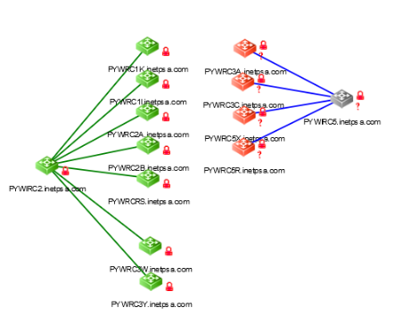

Procédure d'installation VPN
Voici une procédure que j'ai réalisé en stage durant ma 1ère année de BTS pour installer le VPN PALO ALTO dans le domaine informatique de l'hôpital de poissy.
En savoir plusGLPI, raccordement ethernet, gestion d'utilisateurs dans un domaine.
Durant mon 1er stage j'ai beaucoup utilisé une ancienne version de GLPI pour résoudre/créer/modifier/gérer
des tickets. Lorsque j'étais à l'helpdesk je créais des tickets lorsque le problème ou la demande de la
personne n'était pas résolvable sur le moment. J'attribuais donc ce ticket au groupe de personne destiné
selon le ticket, je décrivais l'incident ou la demande avec les noms des machines liés à celui-ci et rentrais
les informations de la personne à contacter pour résoudre ce ticket.
Mais la plupart du temps je n'étais pas à l'helpdesk et je résolvais directement les tickets en les
choisisants sur GLPI, je prennais ceux qui appartenais au groupe "Techniciens Poissy" et que je pouvais
gérer. Chaque déplacement dans l'hôpital était du à un ticket que j'avais choisis préalablement. En général
au début de la journée je repérais et notais plusieurs tickets que j'allais résoudre pendant la seconde
partie de la matinée et pendant l'après-midi.
Une fois les tickets terminés je décrivais comment je les avais résolus et je les fermais.
Certains tickets demandais de mettre en service des prises RJ45, j'ai donc du faire le raccordement ethernet
de celles-ci en entrant dans les locaux techniques et en utilisant des câbles RJ45. Il n'y avait pas de câble
RJ45 à tirer c'était aux personnes qui travaillaient au service technique de le faire. Donc quand il y avait
besoin d'un tirage de câble on faisait un ticket en décrivant la demande et en l'attribuant au groupe
"Service Technique".
Après le raccordement était asser simple car les prises et les baies étaient plutôt bien référencées.
Il m'est arrivé d'utiliser un testeur de câble, c'est une sorte de sonde qui émait un son de plus en plus
fort lorsqu'on la rapproche du bon câble qui correspond à celui où l'on branche notre câble test.Pour la gestion de droits au sein de l'hôpital de poissy on utilisait l'Active Directory (surnommé AD par
tout le monde). C'est le gestionnaire de droit de microsoft donc le serveur où se trouvait l'AD était
évidemment sous Windows (une version spécial serveur). Pour gerer les droits des utilisateurs on rentrait
leur nom d'utilisateur et on rajoutait le droit que l'on voulait lui attribuer dans ses groupes personnels.
Pareil pour les PCs, tous les PCs avaient un droit spécial (PC_wifi) pour pouvoir accéder au wifi de
l'hôpital si un pc ne le possédait pas, il ne pouvait pas se connecter au wifi de l'hôpital (en + de devoir
rajouter des certificats sur le PC à la main). Les droits pouvaient servir à plusieurs choses comme
l'installation d'une application spécifique sur la session de l'utilisateur, l'accès à différents serveurs
locaux comme des serveurs de stockages en commun où des URL pour des applications web...
Voici une procédure que j'ai réalisé en stage durant ma 1ère année de BTS pour installer le VPN PALO ALTO dans le domaine informatique de l'hôpital de poissy.
En savoir plusMigration de switchs,
Pour la migration des switchs cisco sur aruba il a fallut que je fasse 3 fichiers, 2 excell et 1 xml généré
avec 1 des 2 fichiers excell. Le premier fichier excell devait être clair car j'ai du l'envoyer à une
personne pour qu'elle réalise la migration physiquement, le fichier contenait les noms des switchs, les
numéros de baies, numéros de ports avec le nom et numéro de VLAN également, ainsi que le nom des équipements
connectés au ports et pour finir le nom exact des VRF indiqué par la colonne type.
Une fois ce fichier finnit la mission était presque terminée car pour faire les 2 autres fichiers il suffit
de reprendre les informations du premier fichier et de remplir quelques cellules sur le 2ème fichier excell
puis effectuer la macro sur ce fichier pour généré le fichier xml.
- Le 1er fichier fut envoyé à un STX (technicien qui s'occupe du câblage et la gestion des baies
physiquement) pour qu'il puisse migrer les switchs.
- Le second sert simplement à générer le fichier XML.
- Le 3ème fut envoyé sur clearpass pour configurer les droits liés aux différents ports du switch.
S'il y a besoin d'utiliser plusieurs switchs aruba on fait le nombre de fichier correspondant.
- Les CXR sont un peu vieux, mais fonctionne toujours très bien. Ce sont des appareils qui permettent de
prendre la main à distance sur le port console des switchs que l'on lui raccorde(pour pouvoir configurer les
switchs à distance en cas de problème durant une nuit ou autre). Aujourd'hui son grand frère est l'Open Gear
mais pour ma mission j'ai eu à configurer un CXR on va donc se pencher sur cet appareil.
- Dans le cadre de ma mission j'ai du raccorder 4 switchs à un CXR, pour cela j'ai du avoir recours à un
fichier très important qui référence tous les chemins de câbles dans tous les locaux du site de Poissy, avec
les détails qui vont avec. (Fichier disponible dans Mission CXR ci-desous). Avec ce fichier j'ai ensuite
pu trouver les chemins nécéssaires au raccordement des 4 switchs. Certains switchs étaient déinstallé car un
bâtiment venait d'être rénové, j'ai donc installé ces switchs dans les locaux techniques voulus de mon
tuteur. Une fois tous les chemins repérés il a fallut que je fasse un fichier word pour expliquer les
différentes étapes à suivre pour le raccordement des swiths, car ce n'ai pas moi qui vais intervenir pour
raccorder les câbles mais les STX qui eux sont spécialisés là dedans et connaissent mieux que moi les baies
et locaux techniques.
- Une fois les 4 switchs raccordés au IRC5 on raccorde ce IRC5 au CXR et on configure tous les switchs avec
putty et une procédure.
- Une fois tous les switchs configurés on peut tester le fonctionnement du CXR en essayant de se connecter au
port console des switchs avec putty.
Pour modifier la topologie réseau de l'entreprise Stellantis sur IMC j'ai du aller chercher les switchs sur
l'outil et les remmettres dans les bons locaux qui correspondent physiquement. Pour cela je me suis aidé d'un
autre outil qui s'appelle reflex, c'est sur cet outil que tous les équipements sont référencés avec leur
localisation, leur adresse IP etc. Une fois tous les switchs ajoutés sur IMC il m'a suffit de les mettres
dans les dossiers des locaux techniques correspondants.

Les différents fichiers que j'ai utilisé ou créé pour cette mission :
Les différents fichiers que j'ai utilisé ou créé pour cette mission :